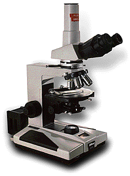
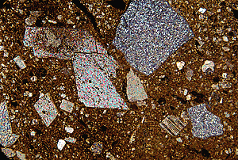

The use of optical lenses to enlarge the image of the object allows a wealth of information to be obtained. From the single lens magnifying glass through to more complex optical microscopes, visual examination enables materials and surface treatments to be identified and characterised. The unprepared surfaces of objects can show details of colour, surface pattern and texture, tool marks, joins, repairs, wear, surface coatings, manufacture, corrosion attack and inscriptions.
Finer details, especially of metals, are observed by the examination of polished sections, using a reflected light microscope. The preparation of these polished sections may involve polishing a small area of the object itself (taper section) or removing a fragment, mounting it in a resin block and then polishing and etching the surface of the block and sample together.
Stones and ceramics often reveal more information when light is passed though a very thin section, rather than being reflected from the surface. Thin sections of ceramics and stones are made by mounting a small fragment of the material on a glass slide and then grinding and polishing it until it is only 0.03 mm thick, thin enough to allow light to pass easily through. The thin sections are examined using a polarising microscope, allowing the observation of textural characteristics, and the identification of individual mineral grains from their optical properties. Thin sections of organic materials, particularly wood, are made in a similar way and examined microscopically to recognise characteristic cell anatomy, which enables the plant or tree to be identified.